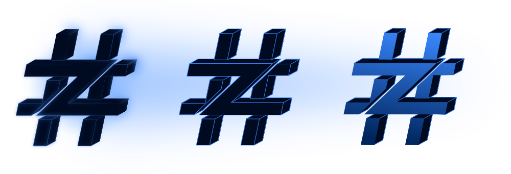

Zettahash Schwarzes Papier
Originalautor: #Raphael 31. Oktober 2022
Überblick
Abstract
Zettahash schlägt eine Open-Source-, öffentlich kontrollierte, dezentralisierte autonome Organisation (DAO) für die Bitcoin-Mining-Branche vor, die die Möglichkeiten der Web3-Infrastruktur nutzt. Diese Initiative markiert eine deutliche Abkehr von traditionellen Unternehmensstrukturen durch die Einführung eines dezentralisierten Governance-Tokens. Ein digitaler Token, der frei von zentraler Kontrolle, Grenzen und Barrieren ist. Ein Anteil, an dem alle weltweit teilnehmen und beitragen können. Eine Einheit, die sich durch Transparenz und Integrität auszeichnet und finanzielle Verantwortung zeigt. Eine DAO, die ihre Einnahmen nicht an eine zentralisierte und privilegierte Minderheit weiterleitet und das Diktat hoher Gehälter, ungerechtfertigter Boni oder anderer Vorzugsbehandlungen und Vergütungen für Führungskräfte, Geschäftsführer oder andere mehrheitlich kontrollierte Aktionäre verhindert.
Stattdessen belohnt es seine dezentralen Token-Inhaber kollektiv, indem es den Wert des Tokens steigert, indem es überprüfbare Beweise für Einnahmen aus Bitcoin-Mining und verschiedenen anderen Unternehmungen liefert. Dieses umfassende Dokument befasst sich mit den komplizierten Aspekten des strukturellen Rahmens des Tokens, den deflationären Mechanismen, den Zuteilungsstrategien, den Komplexitäten dezentraler Bitcoin-Mining-Operationen, dem Rahmen der Unternehmensführung und -beteiligung öffentlicher Unternehmen sowie einem unermüdlichen Engagement für die Förderung ausgewogener, authentischer und transparenter dezentraler Mining-Praktiken.
Introduction
Seit seiner Einführung hat das Bitcoin-Mining-Umfeld erhebliche Veränderungen erfahren, die durch einen deutlichen Trend zur Zentralisierung oder Monopolisierung durch prominente öffentliche und private Unternehmen gekennzeichnet sind. Während diese Unternehmen eine entscheidende Rolle bei der Verbesserung der Akzeptanz, Stärke, des Wachstums und der Sichtbarkeit des Netzwerks gespielt haben, hat dies unbeabsichtigt dazu geführt, dass die Möglichkeiten des Durchschnittsbürgers, sich am Mining-Prozess zu beteiligen, verringert wurden, was zu einer Konsolidierung von Macht und Einfluss führte. Die traditionellen Markteintrittsbarrieren, die oft mit Finanzinvestitionsmethoden wie an der Wall Street öffentlich gehandelten Aktien oder privaten Finanzierungen durch private Institutionen verbunden sind, haben diese Kluft noch weiter verschärft. Als Reaktion auf diese Herausforderungen entstand Zettahash als innovative Lösung, die die Kluft zwischen zentralisierten und dezentralisierten Bitcoin-Mining-Organisationen durch die kombinierte Stärke einer größeren globalen Peergroup und ihr Engagement auf dem digitalen Token-Markt überbrücken soll.
Das grundlegende Ziel von Zettahash ist es, das Gleichgewicht und die Inklusivität in der Bitcoin-Mining-Branche wiederherzustellen und das vertrauenslose, demokratisierte Wesen von Bitcoin zu verstärken. Zettahash sieht eine Zukunft voraus, in der die Teilnahme am Bitcoin-Mining über einige wenige Privilegierte hinausgeht und einer vielfältigen Gruppe von Teilnehmern und Mitwirkenden zugänglich wird. Diese Vision zielt darauf ab, die Freiheit zu fördern und ein gerechteres und rechenschaftspflichtigeres dezentrales Netzwerk aufzubauen.
Executive Summary
The Problem Statement
In den letzten Jahren sind im Bitcoin-Mining-Sektor Entwicklungen zu beobachten, die durch eine deutliche Konsolidierung der Hash-Rate-Kontrolle auf eine immer kleiner werdende Gruppe von Einzelpersonen, einflussreichen Unternehmen und Mining-Pools gekennzeichnet sind. Dies kann zu einer Abkehr vom Kernkonzept der Dezentralisierung führen, einem Grundprinzip der Bitcoin-Philosophie, und stellt potenzielle Herausforderungen dar.
Diese zunehmende Zentralisierung wirft auch allgemeinere Bedenken auf, darunter das Risiko von Branchenschwankungen und der Entstehung monopolistischer Tendenzen. Es ist wichtig zu betonen, dass die Stärke von Bitcoin in seinem vertrauenslosen System liegt, bei dem die Miner eine zentrale Rolle bei der Aufrechterhaltung der Integrität des Netzwerks spielen. Die Verantwortung der Miner, diese vertrauenslose Natur aufrechtzuerhalten, ist entscheidend, um die Grundprinzipien zu bewahren, auf denen Bitcoin gegründet wurde.
The Solution Statement
Die Zettahash-Plattform bietet unzählige Vorteile für Einzelpersonen und das breitere Bitcoin-Netzwerk. Indem es Einzelpersonen stärkt, bietet Zettahash einen Weg, sich für dezentrales Bitcoin-Mining einzusetzen, ohne dass persönliche Mining-Hardware erworben und verwaltet werden muss, und fördert so Inklusivität und Zugänglichkeit für ein breiteres Publikum.
Zettahash fungiert als Katalysator für die Dezentralisierung des Mining-Prozesses. Indem es den Einstieg ins Mining für Einzelpersonen vereinfacht, stellt Zettahash die vorherrschende Konzentration der Hash-Rate auf einige wenige ausgewählte Hauptakteure aktiv in Frage. Im Rahmen unseres Engagements für echte Dezentralisierung plädieren wir für die Einführung dezentraler Governance-Strukturen wie DAOs innerhalb der Branche. Diese gemeinsame Anstrengung erhöht die Sicherheit und Widerstandsfähigkeit des Bitcoin-Netzwerks, schützt es vor potenziellen Angriffen und fördert ein demokratischeres und integrativeres Ökosystem.
Darüber hinaus ist Zettahash Vorreiter bei der Herausforderung von Branchennormen, indem es Unternehmen ermutigt, dezentrale Governance-Modelle wie DAOs (Decentralized Autonomous Organizations) einzuführen. Dieser Ansatz entspricht der umfassenderen Vision einer echten Dezentralisierung und geht über die traditionellen Grenzen der zentralen Kontrolle hinaus.
The Zettahash Organization
Die Zettahash-Mission
Die Mission von Zettahash ist es, eine öffentlich kontrollierte Organisation zu gründen, die von der kollektiven Macht der Mitglieder und Teilnehmer ihrer Gemeinschaft geprägt und angetrieben wird. Jede getroffene Entscheidung, jede unternommene Aktion und jedes begonnene Unterfangen wird von dem Grundsatz geleitet, der Öffentlichkeit und dem Netzwerk zu nützen. Zettahash hat sich zum Ziel gesetzt, ein Ökosystem zu schaffen, in dem die Interessen der Gemeinschaft mit dem Erfolg von Zettahash in Einklang stehen, und fördert eine komplementäre Beziehung zwischen Zettahash-Inhabern und den gewählten Mitgliedern der Organisation. Zettahash zielt darauf ab, Einzelpersonen zu befähigen, Eigentümer einer Organisation zu werden, die durch Bitcoin-Mining unterstützt wird.
Die Zettahash-Vision
Zettahash ist bestrebt, ein transparentes und ehrliches Unternehmen zu sein, das weder sich selbst noch Führungskräfte oder geschäftsführende Mitglieder mit generierten Gewinnen, ungerechtfertigten Gehältern, Boni oder anderen Vergünstigungen belohnt. Stattdessen belohnt Zettahash seine Token-Inhaber, indem es den Wert des Tokens mit den durch Bitcoin-Mining und andere Unternehmungen generierten Einnahmen steigert. Wir sehen Zettahash als eine neue Grenze für börsennotierte Unternehmen weltweit, die Transparenz, Gerechtigkeit und Rechenschaftspflicht erhöht.
Empowering Community through Consensus
Im Geiste demokratischer Prinzipien ist das Zettahash Community Consensus Forum eine Plattform, auf der die Stimme jedes Teilnehmers Gehör findet. Das Forum basiert auf einem demokratischen Prozess und verwendet einen Upvoting-Mechanismus, der Community-Mitgliedern die Möglichkeit gibt, wichtige Themen hervorzuheben. Dieser Abschnitt verdeutlicht, wie dieser demokratische Rahmen in Verbindung mit der aufmerksamen Aufmerksamkeit des Zettahash-Teams eine von der Community getragene Entscheidungsfindung ermöglicht.
Community Forum Mechanics
Um unser Engagement für die Förderung einer integrativen und dynamischen Community zu demonstrieren, haben wir eine unkomplizierte Teilnahmevoraussetzung festgelegt. Um Teil unserer Plattform zu werden, verbinden Sie einfach Ihr Zettahash (ZH)-Konto mit einer Web3-Wallet, die Ihren Besitz des ZH-Tokens bestätigen kann. Dieser Überprüfungsschritt ist entscheidend, um den Status unserer Teilnehmer als echte Zettahash-Inhaber zu bestätigen.
Unsere Plattform ist inklusiv gestaltet und wir glauben an die Macht offener Diskussionen. Jeder (ZH)-Inhaber ist herzlich eingeladen, Beiträge und Themen zu erstellen, sodass jedes Mitglied unserer Community zu Wort kommt. Alle Beiträge und Themen werden von den gewählten Mitgliedern überwacht, um Einblicke in die Interessen der Community und die wichtigsten Diskussionspunkte zu erhalten.
Community-Driven Governance
Nutzung von Open-Source-Integrationstools wie Snapshot.org, einer Plattform, die speziell auf die Optimierung der dezentralen Verwaltung für Dezentrale Autonome Organisationen (DAOs) zugeschnitten ist. Diese Schnittstelle ermöglicht es Community-Mitgliedern, sich aktiv an der Entscheidungsfindung zu beteiligen, sodass keine umfassenden technischen Fachkenntnisse erforderlich sind.
- Vorschlagsverwaltung: Ermöglicht jedem Community-Mitglied, Vorschläge zu einer breiten Themenpalette zu erstellen, von Protokoll-Upgrades bis hin zu Finanzierungsanfragen.
- Abstimmungsprozess:
Benutzer mit Stimmrecht nehmen während eines festgelegten Zeitraums an einem gaslosen Abstimmungsprozess teil und drücken ihre Präferenzen mithilfe nativer Token aus.
- Konsens und Quorum:
DAOs können Mindestkriterien für die Beteiligung (Quorum) und die Zustimmungsrate festlegen, damit Vorschläge angenommen werden, und so eine breite Beteiligung der Community sicherstellen.
- Layer-2-Lösung:
Funktioniert als Layer-2-Lösung auf vorhandenen Blockchains, um Kosten und Überlastungen durch die Speicherung von Abstimmungsdaten außerhalb der Blockchain zu minimieren.
- Gasloser Abstimmungsmechanismus:
Verwenden Sie einen gaslosen Mechanismus, der es Benutzern ermöglicht, Nachrichten mit ihren Wallets zu signieren, um Stimmen abzugeben, ohne dass Transaktionsgebühren anfallen.
- Ausführung genehmigter Vorschläge:
Sobald ein Vorschlag das erforderliche Quorum und die erforderliche Genehmigung erhält, werden Smart Contracts ausgelöst, um die vorgeschlagenen Maßnahmen automatisch auszuführen.
- Transparenz und Überprüfung:
Alle Abstimmungsdaten werden in der Blockchain aufgezeichnet. Dies gewährleistet Transparenz und Überprüfbarkeit, die für die Überprüfung des Ergebnisses jedes Vorschlags von entscheidender Bedeutung sind.
- Benutzerfreundliche Oberfläche:
Ein Design, bei dem die Benutzerfreundlichkeit im Vordergrund steht und das es Community-Mitgliedern ermöglicht, sich an der dezentralen Verwaltung zu beteiligen, ohne dass umfassende technische Fachkenntnisse erforderlich sind oder hohe Transaktionskosten anfallen.
Transparent Accountability
Treasury & Multisig
Multisignatur-Wallets (Multisig-Wallets) sind eine Art Treasury-Wallet, die mehrere private Schlüssel zur Autorisierung einer Transaktion erfordert. Dieses Konzept wird häufig in dezentralisierten autonomen Organisationen (DAOs) eingesetzt, um die Sicherheit und Dezentralisierung zu verbessern.
Multi-Signature Wallet in a DAO:
- Erstellen einer Wallet:
- Eine Multisignatur-Wallet wird mit einer vordefinierten Anzahl erforderlicher Signaturen (Unterzeichner oder Schlüssel) eingerichtet, um eine Transaktion zu genehmigen.
- Beispielsweise erfordert eine 3-von-5-Multisig-Wallet, dass drei der fünf gewählten Mitglieder eine Transaktion unterzeichnen, damit sie gültig ist. - Gewählte Mitglieder:
- Im Rahmen einer DAO werden Mitglieder häufig gewählt, um die Community oder Interessenvertreter zu vertreten.
- Diese gewählten Mitglieder erhalten private Schlüssel oder Zugriff auf ihren eigenen, einzigartigen Satz privater Schlüssel, die mit der Multisig-Wallet verknüpft sind. - Transaktionsautorisierung:
- Wenn eine Transaktion initiiert wird, muss sie von der erforderlichen Anzahl an Mitgliedern unterzeichnet werden.
- In einem 3-von-5-Szenario müssten beispielsweise drei gewählte Mitglieder die Transaktion unterzeichnen, damit sie ausgeführt wird. - Verbesserte Sicherheit:
- Das Multisig-Setup verbessert die Sicherheit, da ein Kompromiss oder böswillige Aktivitäten einer einzelnen Person nicht ausreichen, um eine Transaktion auszuführen.
- Es verteilt die Verantwortung auf mehrere Parteien und verringert so das Risiko eines unbefugten Zugriffs.
Relationship to a Democratic Elected Congress:
Das Konzept eines Multisig-Wallets mit gewählten Mitgliedern in einer DAO weist Ähnlichkeiten mit der Governance-Struktur eines demokratisch gewählten Kongresses auf:
- Vertretung:
- Gewählte Mitglieder vertreten in beiden Szenarien die Interessen der Gemeinschaft.
- In einem demokratisch gewählten Kongress werden Vertreter durch ein Abstimmungsverfahren ausgewählt. In einer DAO können ZH-Inhaber für Vertreter stimmen. - Entscheidungsfindung:
- Beide Systeme beinhalten einen Entscheidungsprozess, bei dem eine bestimmte Anzahl gewählter Mitglieder einem Vorschlag oder einer Entscheidung zustimmen muss.
- In einem demokratischen Kongress kann eine Mehrheitsabstimmung erforderlich sein, um Gesetze zu verabschieden. In einer Multisig-Wallet ist für die Transaktionsgenehmigung eine Mehrheit der Unterzeichner erforderlich. - Kontrolle und Ausgleich:
- Das Multisig-Setup führt wie ein demokratisches System Kontrolle und Ausgleich ein. Kein einzelner Mensch oder eine kleine Gruppe kann einseitig Entscheidungen treffen, ohne die Zustimmung des größeren gewählten Gremiums, in diesem Fall der Zettahash DAO. - Transparente Governance:
- Beide Systeme zielen auf eine transparente Governance ab, bei der Entscheidungen offen getroffen werden und die Community vollen Einblick in den Entscheidungsprozess hat.
Allocation of Funds
Capital Allocation and Commitments
Beiträge werden ausschließlich für Investitionsausgaben (CapEx) und Betriebsausgaben (OpEx) im Zusammenhang mit den Bitcoin-Mining-Aktivitäten der Stiftung verwendet. CapEx deckt beispielsweise Ausgaben ab: Kauf von Bitcoin-Digital-Mining-Maschinen, Infrastruktur, Geräteanschaffungen usw. OpEx umfasst Hosting-Vereinbarungen, Gehälter des Betriebsteams, Stromkosten und andere betriebliche Notwendigkeiten. Nettogewinne aus dem Bitcoin-Mining werden entweder durch den direkten Erwerb von Zettahash-Aktien vom globalen Markt zu den geltenden Marktpreisen (Marktanteilsrückkauf) oder durch die Verwendung dieser Mittel zur Unterstützung der laufenden Expansion des Mining-Betriebs und anderer Unternehmungen reinvestiert. Die DAO entscheidet, welche Vorgehensweise am besten geeignet ist.
Asset Ownership and Financial Transparency
Zettahash ist fest entschlossen, bei der Offenlegung seiner umfangreichen Vermögenswerte ein außergewöhnliches Maß an Transparenz zu wahren. Dazu gehört eine vollständige Offenlegung aller Vermögenswerte der Organisation sowie vollständig überprüfbare Finanzdaten, die der Öffentlichkeit zugänglich sind.
Wallet Addresses and Financial Assets
Als integraler Bestandteil unseres Engagements für Transparenz werden wir die Wallet-Adressen, die mit Bitcoin-Mining und -Beständen sowie anderen bekannten Krypto-Assets wie beispielsweise, aber nicht beschränkt auf, „Stablecoins“ verknüpft sind, öffentlich bekannt geben. Darüber hinaus wird sich diese Transparenz auch auf Kontoauszüge erstrecken und einen begrenzten, aber aufschlussreichen Überblick über unsere Fiat-Bestände sowie Einblicke in unser vielfältiges Portfolio mit verschiedenen Währungen und Immobilienbeständen bieten.
Tangible Assets and Expansion
Die für unsere Geschäftstätigkeit wesentlichen Vermögenswerte gehen über das digitale Ökosystem hinaus. Wir sind stolz darauf, unseren Besitz an digitalen Mining-Maschinen, Ausrüstung, Infrastruktur und Immobilienbesitz zu präsentieren, die zur allgemeinen Vitalität und Expansion von Zettahash beitragen.
Financial Accountability
Im Einklang mit unserem Engagement für Transparenz wird Zettahash proaktiv Schritte unternehmen, um Echtzeitdaten verantwortungsvoll zu teilen. Zunächst wird dies durch die Teilnahme an einem öffentlichen oder privaten Mining-Pool ermöglicht, wodurch interessierte Teilnehmer Zugang zu authentischen und zeitnahen Finanzergebnissen erhalten.
Reference and Inspiration:
-Satoshi Nakamoto, the pseudonymous creator of Bitcoin, outlined his motivations and intentions in the original Bitcoin whitepaper titled "Bitcoin: Ein Peer-to-Peer-System für elektronisches Bargeld,“- published October 31, 2008. While we cannot definitively know Satoshi's true intentions, the whitepaper provides insights into the goals and purposes behind the creation of Bitcoin.
1. Decentralization and Peer-to-Peer Transactions: Satoshi aimed to create a decentralized digital currency system that would allow individuals to conduct peer-to-peer transactions without the need for intermediaries like banks or financial institutions. This would enable direct transfer of value between parties, reducing the need for trust in third parties.
2. Eliminating Double Spending: One of the key challenges in digital currency systems was the potential for double spending—spending the same digital token more than once. Satoshi proposed a solution using a decentralized consensus mechanism, known as proof-of-work, to prevent double spending and ensure the integrity of transactions.
3. Openness and Transparency: Bitcoin's design emphasized transparency through a public ledger called the blockchain. Every transaction is recorded on the blockchain, providing an open and verifiable history of all transactions.
4. Limited Supply: Bitcoin was designed with a capped supply of 21 million coins to prevent inflation and maintain scarcity, similar to precious metals like gold. This scarcity was intended to ensure that the value of Bitcoin would not be easily diluted over time.
5. Financial Inclusion: Satoshi's vision included providing access to financial services for people who are unbanked or underbanked, allowing them to participate in the global economy and have more control over their own finances.
6. Censorship Resistance: By operating on a decentralized network, Bitcoin was intended to resist censorship and control by any single entity or government. Transactions could not be easily blocked or controlled, giving users greater financial freedom.
7. Security and Anonymity: While Bitcoin transactions are recorded on a public ledger, they can be conducted pseudonymously. This provides a certain level of privacy and security for users, especially compared to traditional financial systems.
It's important to note that while these were the stated goals and purposes outlined by Satoshi Nakamoto, Bitcoin's evolution and use cases have expanded beyond these initial intentions. Over time, Bitcoin has become a store of value, a speculative investment, and a subject of technological innovation. Different individuals and groups have interpreted and used Bitcoin in various ways, leading to a diverse range of opinions about its purpose and potential.
—“Safeguarding the integrity and decentralization of Bitcoin begins by promoting the decentralization of Bitcoin mining companies." - #Raphael


Zettahash DAO LLC
Majuro, Marshallinseln MH 96960

ZH-LIMITED
Postfach 3175 Road Town, Tortola VG1110